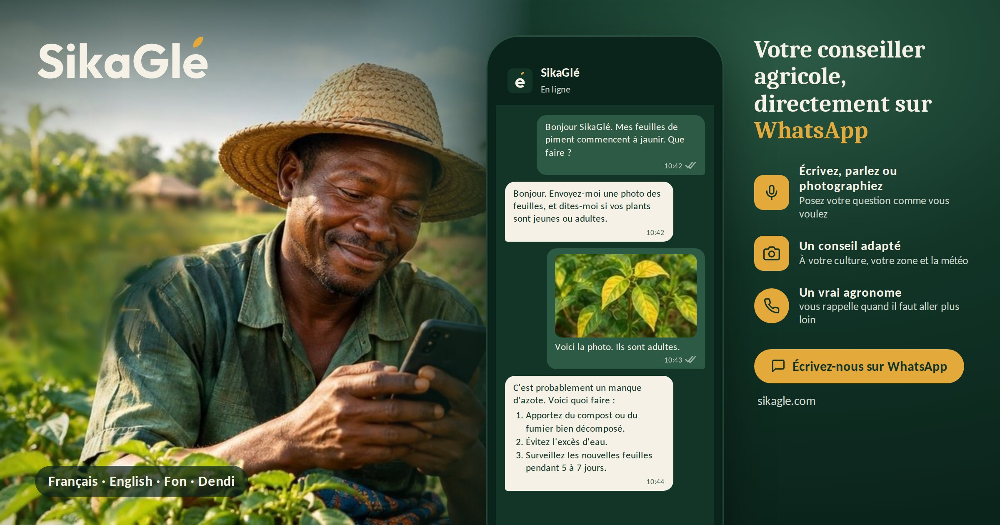

Texte, voix ou photo
L'agriculteur choisit naturellement son mode de communication : message écrit, message vocal ou photo d'une plante.
SikaGlé accompagne les agriculteurs directement sur WhatsApp. Une question par texte, par vocal ou par photo — une réponse adaptée à votre culture, votre situation et votre réalité de terrain.

SikaGlé transforme une conversation ordinaire en assistance agricole personnalisée, sans demander à l'agriculteur de changer ses habitudes.
L'agriculteur choisit naturellement son mode de communication : message écrit, message vocal ou photo d'une plante.
SikaGlé s'appuie sur une base de connaissances agricoles structurée et sur des sources sélectionnées plutôt que d'inventer une réponse.
Lorsque cela est pertinent, les recommandations peuvent tenir compte de la localisation, de la culture et des conditions météorologiques.
L'agriculteur n'a pas besoin de connaître l'intelligence artificielle. Il parle simplement à SikaGlé.
En français ou dans sa langue préférée, par écrit ou par message vocal.
La demande est interprétée en tenant compte des informations disponibles sur l'exploitation.
SikaGlé interroge sa base documentaire pour retrouver les informations utiles à la question.
L'objectif : un conseil compréhensible, concret et adapté à la situation de l'agriculteur.
SikaGlé construit progressivement une base documentaire spécialisée pour l'agriculture africaine, avec une attention particulière portée à la qualité, à la pertinence et aux conditions d'utilisation des sources.
Publications et ressources issues d'organismes scientifiques et de recherche.
Ressources pertinentes pour les réalités agricoles du continent.
Ressources liées au contexte agricole du Bénin.
Informations directement utiles aux producteurs et aux conseillers agricoles.
Ressources permettant d'améliorer l'orientation face aux problèmes agricoles.
Une base organisée pour retrouver les informations les plus pertinentes.
SikaGlé est conçu pour aller au-delà du français et rapprocher l'assistance agricole des langues réellement parlées sur le terrain.
Obtenir rapidement des informations sur les cultures, maladies, ravageurs, pratiques agricoles et conditions de production.
Offrir aux membres un premier niveau d'assistance agricole disponible à tout moment.
Étendre la portée des équipes de terrain et rendre l'information agricole plus accessible aux producteurs.
Testez SikaGlé sur WhatsApp ou contactez-nous pour discuter d'un pilote, d'un partenariat ou d'une intégration dans votre programme agricole.